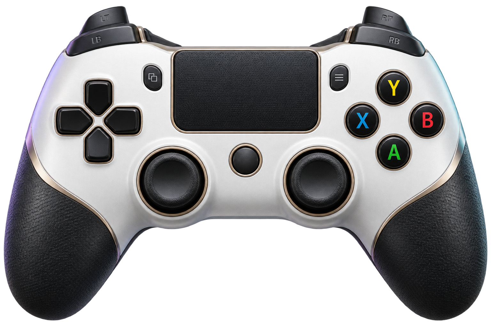
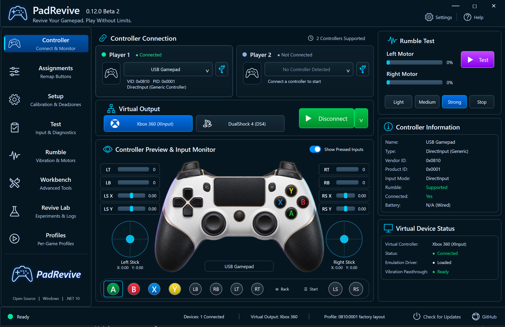

Connected.
In control.
See every stick, trigger, and button respond. Choose your virtual output and select controls straight from the mapping dock.
Live input. Clear feedback.WINDOWS CONTROLLER STUDIO / 0.12 BETA 2
A modern, easy-to-use, interactive UI for the gear you already love. Map it. Tune it. Feel it. Get back to playing.

01 / INSIDE THE STUDIO
Move through the studio as you scroll. Your controller, its feedback, and the tools to make it yours.

See every stick, trigger, and button respond. Choose your virtual output and select controls straight from the mapping dock.
Live input. Clear feedback.02 / MADE AROUND YOUR CONTROLLER
The tools make more sense when you see where they matter. Keep scrolling, or pick a feature.
Remap controls, learn an unfamiliar layout, and save your own profiles. Make the controls work for the way you play.
03 / WHY PADREVIVE EXISTS
No other software I tried made my stick rumble.
PadRevive is the only one that did.
That was the reason to build it: bring the feedback back, and give budget controllers the mapping, calibration, and testing tools they deserve.
READY WHEN YOU ARE
Plug in. Find your setup. Play without limits.
ViGEmBus is required separately for virtual output. Physical rumble supports native XInput and supported 0810:0001 HID motor layouts. This beta executable is unsigned.
App, complete source & checksums